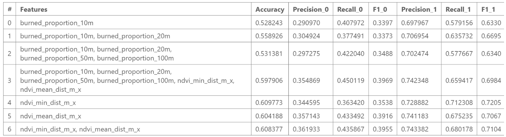
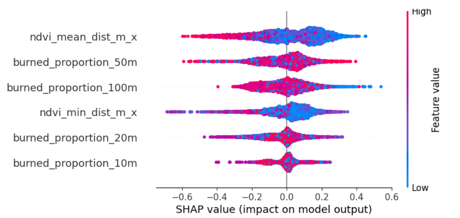

The Eaton Fire occurred in January 2025 near Altadena, California. The fire destroyed over 9,000 structures, while others in close proximity to the flames remained intact. Our goal for this project was to build a model that predicts whether a structure burned in the 2025 Eaton Fire based on proximity to nearby burned structures and proximity to vegetation. This project was inspired by the study of Knapp et al. (2021), which analyzed housing arrangement and structure loss in the 2018 Camp Fire.
Analysis: PythonRatio of structures in a radius of 20m that burned:


Ratio of structures in a radius of 50m that burned:


Step 1:NDVI Derivation
NDVI (Normalized Difference Vegetation Index) highlights how much near-infrared light and red light are reflected, providing an effective way to distinguish vegetation from its background.
Step 2:Calculate the distance between each structure and an NDVI between 0.3 and 0.8.


Distribution of mean distance between structure and an NDVI between 0.3 and 0.8:


Logistic Regression
XG Boost
Fall 2020-May 2021, I worked at the Formal Analysis of Interactive Media (FAIM) Lab at Pomona College. I assisted in the development of Mappy, a Rust program which interprets pixel data from emulated Nintendo NES games. Mappy's main feature is to produce game maps (linking together different levels and rooms), I specifically worked on Sprite Blobbing and Avatar Detection features, which involve tracking game sprites and grouping/classifying them based on their movement and relation to user input. In fall 2021, we submitted a paper on Mappy to a small conference called AIIDE (AI and Interactive Digital Entertainment). Not only was the paper accepted, but it also received an award for best paper at the conference.
Click here to view the paper!Triumvirate Arena is a battle card game featuring three players: Nate, Chloe, and Grace. Each player type has three signature moves which might increase or decrease your health/mana, and/or do damage to the other player. The goal of this two player game is to reduce the opponent to zero health. This project was part of the spring 2022 Game Engine Programming class at Pomona College.
We wrote Triumvirate Arena in Rust, completely from scratch, without a pre-made game engine (using Bitblt and Vulkan shaders). In our team of 3 (myself, Chloe, and Grace), I worked on gameflow mechanics (health/mana interactions, turn taking); player moves; and creating original music, while my partners worked on other mechanics.

Click here for the Triumvirate Arena repository, in order to see the code and more gameplay examples!
Features:
JumpyBall is a 3D parkour game. The player navigates through levels by jumping across platforms, avoiding the ground, and working their way to the end gem.
We used the Frender game engine (created by Professor Joseph Osborn), which assisted with the 3D rendering. We created the physics, collision system and assets from scratch.
In JumpyBall, I primarily worked on asset creation and the collision system. I created all of the 3D models in Blender and wrote a Python script to create a set of bounding boxes for objects on the map (used for collision system). This project was also part of the spring 2022 Game Engine Programming class at Pomona College.
Features:
During fall 2021, I worked in a team of 5 to create a neural network that can accurately predict the delivery time of items sold on eBay (based on features such as declared handling days, item category, weight, etc.).